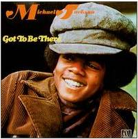
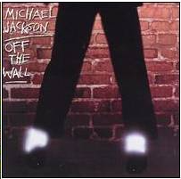
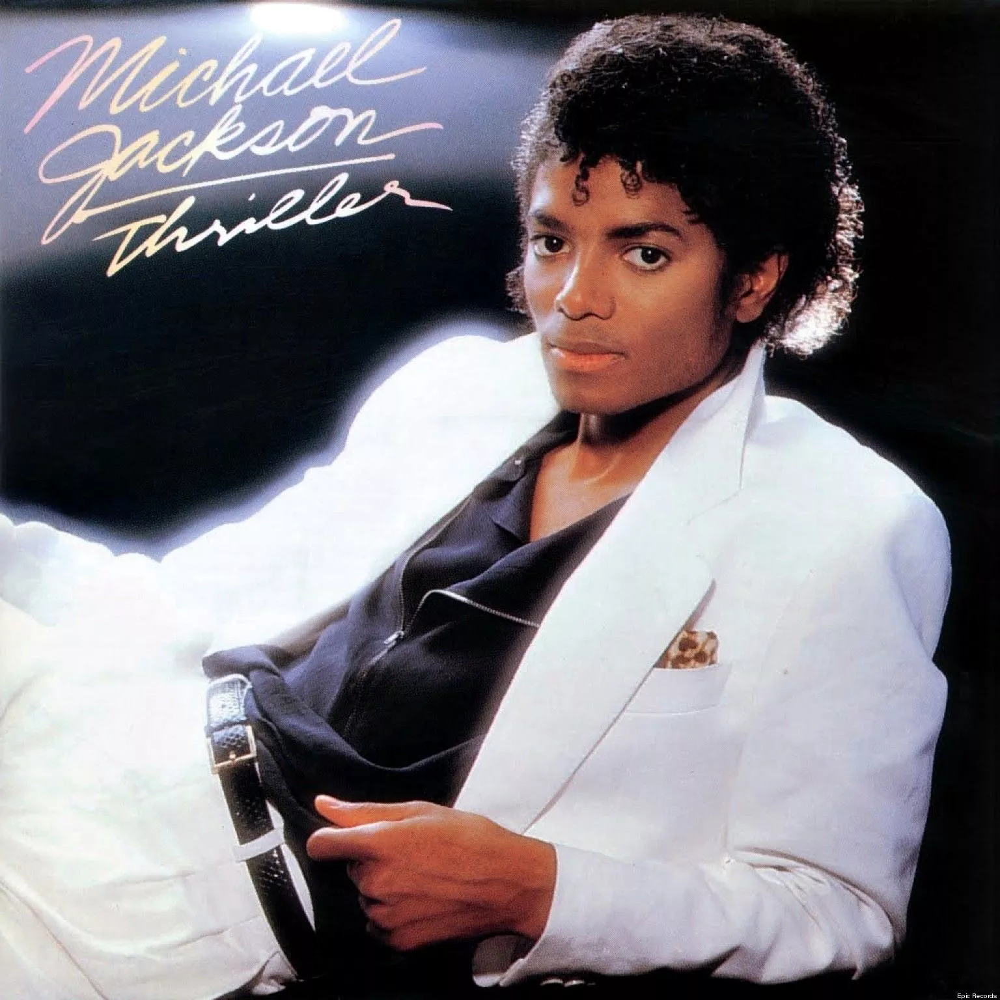
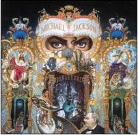
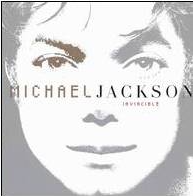

Biografia
Michael Jackson (1958-2009), conhecido como o Rei do Pop (apelido dado por Elizabeth Taylor), foi um cantor, compositor e dançarino norte-americano. Ele foi um dos maiores artistas do showbiz mundial.
Michael Jackson nasceu em Indiana, Estados Unidos, no dia 29 de agosto de 1958. Filho de Joseph Walter Jackson (conhecido como Joe) e Katherine Scruse Jackson, Michael era o sétimo de nove irmãos.
O princípio da carreira
A família de Michael Jackson era humilde e vivia em uma casa com apenas dois quartos. Joe Jackson trabalhava em uma usina siderúrgica e, como hobby, tocava guitarra e era empresário musical. A mãe, Katherine, também era ligada à música e tocava piano na igreja. O menino prodígio começou a cantar aos cinco anos de idade.
A primeira aparição de Michael na mídia foi em 1964 quando se apresentou com o grupo The Jackson Five (inicialmente o conjunto chamava Jackson Brothers) ao lado dos irmãos Jackie, Tito, Jermaine e Marlon. Como Michael era o caçula, ficou conhecido como Little Michael.
No final dos anos sessenta eles já haviam assinado um contrato com a gravadora Motown Records. Em pouco tempo, com as suas grandes performances, o grupo alcançou o topo das paradas.
Em 1966, Michael Jackson, o mais novo dos irmãos, se tornou o vocalista e dançarino principal do conjunto.
Em 1970 o irmão Jermaine deixou o grupo para seguir carreira solo, o conjunto então mudou o nome para The Jacksons. Os maiores sucessos dessa época foram: Enjoy yourself (1976), Show you the way to go (1976), Can you fell it (1981) e Blame it on the boogie (1978).
A carreira solo
Ainda integrante do grupo, Michael lançou os compactos de sua autoria Go To Be There (1972), Ben (1972), Music & Me (1973) e Forever Michael (1975), todos com grande destaque na mídia.
Em 1979 se separou do grupo e iniciou a sua carreira solo com o disco Off the Wall, que vendeu cerca de sete milhões de cópias.
Em 1982, lançou o álbum Thriller, que se tornou um sucesso mundial e viria a se tornar o álbum mais vendido da história da música. Os vídeos de divulgação de suas músicas, entre elas, Billie Jean, Beat it e Thriller, exibidos na MTV, foram considerados os melhores clipes de todos os tempos.
Em 1987 o cantor lançou o disco Bad, que vendeu mais de 25 milhões de cópias. Seguindo a tendência de Thriller, Michael investiu pesado na produção e divulgação de clipes. É desse álbum as canções Smooth criminal e Man in the mirror.
No ano a seguir, Michael lançou a sua autobiografia, o livro Moonwalker.
Em 1991, divulgou o álbum Dangerous, que vendeu menos do que estava sendo esperado. Foram 29 milhões de cópias vendidas. O sucesso foi mantido com o videoclipe Black or White (protagonizado por Macaulay Culkin).
Quatro anos mais tarde Michael lançou seu álbum HIStory: Past, Present and Future, Livro 1. Nessa ocasião ele esteve no Brasil, em Salvador (mais precisamente na Bahia), onde gravou o clipe They Don’t Care About Us.
Em 2001, já em declínio em termos de venda, Michael lançou o disco de estúdio Invincible. Seu trabalho a seguir foi o álbum Thriller 25, um disco de aniversário para celebrar os vinte e cinco anos do seu sucesso estrondoso: Thriller.
Em uma tentativa de retomar o sucesso, uma grande turnê estava sendo preparada e, no dia 5 de março de 2009, Michael Jackson anunciou em Londres sua volta aos palcos. O show This is It, teria uma série de 50 apresentações com início marcado para 13 de junho, no O2 Arena, em Londres. Infelizmente Michael faleceu nesse interim.
Seu álbum Michael, lançado no dia 13 de dezembro de 2010, foi um sucesso póstumo que reuniu dez canções inéditas. O disco vendeu três milhões de cópias no primeiro ano.
Em maio de 2014 foi lançado o seu segundo álbum póstumo. Intitulado Xscape, o disco contém oito canções inéditas.
Discografia
|  |  |  |
 |
 |  |